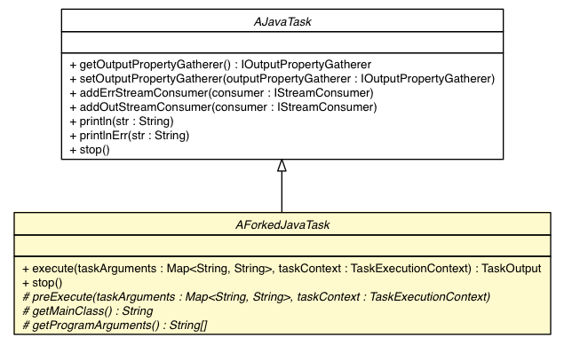

com.singularity.ee.agent.systemagent.api
Class AForkedJavaTask

java.lang.Object
 com.singularity.ee.agent.systemagent.api.AJavaTask
com.singularity.ee.agent.systemagent.api.AForkedJavaTask
com.singularity.ee.agent.systemagent.api.AJavaTask
com.singularity.ee.agent.systemagent.api.AForkedJavaTask
- All Implemented Interfaces:
- ITask
public abstract class AForkedJavaTask
- extends AJavaTask
| Methods inherited from class java.lang.Object |
clone, equals, finalize, getClass, hashCode, notify, notifyAll, toString, wait, wait, wait |
AForkedJavaTask
public AForkedJavaTask()
execute
public TaskOutput execute(Map<String,String> taskArguments,
TaskExecutionContext taskContext)
throws TaskExecutionException
- Description copied from interface:
ITask
execute() is the method to do processing. Execution should check on the isStopped() to stop further execution
- Parameters:
taskArguments - the name value pairs sent to the task for executiontaskContext - the task execution context
- Returns:
- the task output
- Throws:
TaskExecutionException - if the task could not be executed
stop
public void stop()
- Description copied from class:
AJavaTask
- All the implementations of AJavaTask MUST call super.stop() in order to
successfully close the input and output streams
- Specified by:
stop in interface ITask- Overrides:
stop in class AJavaTask
preExecute
protected abstract void preExecute(Map<String,String> taskArguments,
TaskExecutionContext taskContext)
throws TaskExecutionException
- Throws:
TaskExecutionException
getMainClass
protected abstract String getMainClass()
getProgramArguments
protected abstract String[] getProgramArguments()